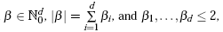
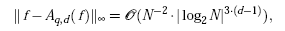
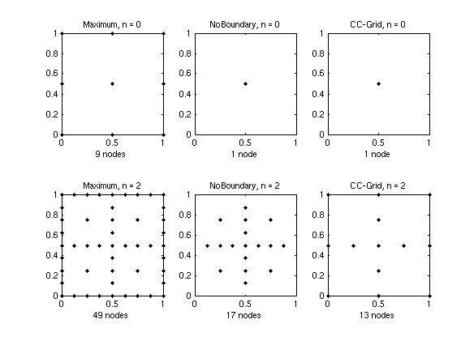

Piecewise linear basis functions
Piecewise linear basis functions provide a good compromise between accuracy and computational cost due to their bounded support. The Sparse Grid Interpolation package includes three different grid types that work with piecewise multilinear basis functions:- The Clenshaw-Curtis grid type "
ClenshawCurtis" (CC) - the "classical" maximum-norm-based grid type "
Maximum" (M), as described e.g. by Bungartz/Griebel in [1], - The maximum-norm-based grid without points on the boundary "
NoBoundary" (NB), with basis functions that extrapolate towards the boundary (it is not assumed that the objective function must be zero at the boundary).
For a detailed description of the piecewise multilinear basis functions implemented here, please see [2] or [3, ch. 3], and the references stated therein.
Accuracy of piecewise multilinear interpolation
We now take a brief look at the approximation quality. An a priori error estimate can be obtained for a d-variate function f if continuous mixed derivatives
with
exist. According to [4] or [5], the order of the interpolation error in the maximum norm is then given by
where Aq,d(f) denotes the sparse grid interpolant of f, and N denotes the number of grid points of the sparse grids of type CC or M (the NB grid type has not yet been analyzed, but shows the same order of convergence in numerical tests). Note that the number of grid points N of Aq,d(f) can be computed by spdim(q-d,d). Piecewise multilinear approximation on a full grid with N* grid points is much less efficient, i.e. O(N*-2/d).
Number of grid points
The following table shows the number of grid points of the non-adaptive sparse grid interpolant depending on the interpolation depthn.
| n | d=2 | d=4 | d=8 | ||||||
|---|---|---|---|---|---|---|---|---|---|
| M | NB | CC | M | NB | CC | M | NB | CC | |
| 0 | 9 | 1 | 1 | 81 | 1 | 1 | 6561 | 1 | 1 |
| 1 | 21 | 5 | 5 | 297 | 9 | 9 | 41553 | 17 | 17 |
| 2 | 49 | 17 | 13 | 945 | 49 | 41 | 1.9e5 | 161 | 145 |
| 3 | 113 | 49 | 29 | 2769 | 209 | 137 | 7.7e5 | 1121 | 849 |
| 4 | 257 | 129 | 65 | 7681 | 769 | 401 | 2.8e6 | 6401 | 3937 |
| 5 | 577 | 321 | 145 | 20481 | 2561 | 1105 | 9.3e6 | 31745 | 15713 |
| 6 | 1281 | 769 | 321 | 52993 | 7937 | 2929 | 3.0e7 | 141569 | 56737 |
| 7 | 2817 | 1793 | 705 | 1.3e5 | 23297 | 7537 | 9.1e7 | 5.8e5 | 1.9e5 |
The following graph illustrates the sparse grids of level 0 and level 2 of the three respective grids in two dimensions.
Which piecewise linear interpolation scheme works best?
Although the performance of the three grid types is rather similar for lower-dimensional problems, there are two important points to be mentioned:- The
ClenshawCurtisgrid and theNoBoundarygrid have just a single node at the lowest interpolation leveln = 0(this means that an interpolant of level 0 of these grid types is just a constant function). TheMaximumgrid has3^dnodes at the lowest level. Therefore, theMaximumis not well-suited for higher-dimensional problems. For instance, ford = 10, already 59049 support nodes would be required to obtain an initial interpolant. - Since the CC-grid is the most versatile grid working well in both lower and higher dimensions, at this point, the dimension-adaptive algorithms are implemented for this grid type only.
spcompare from the command line or from the Sparse Grid Interpolation demo page).